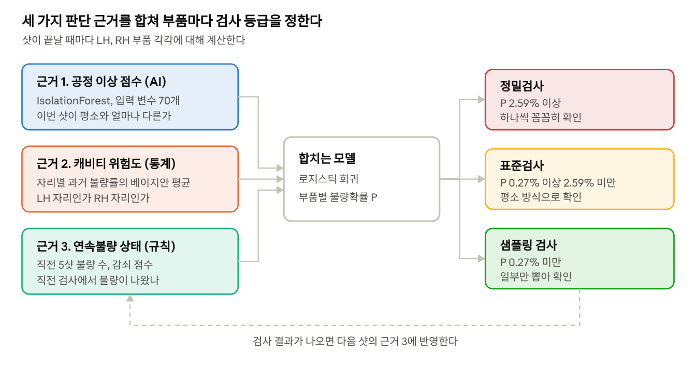
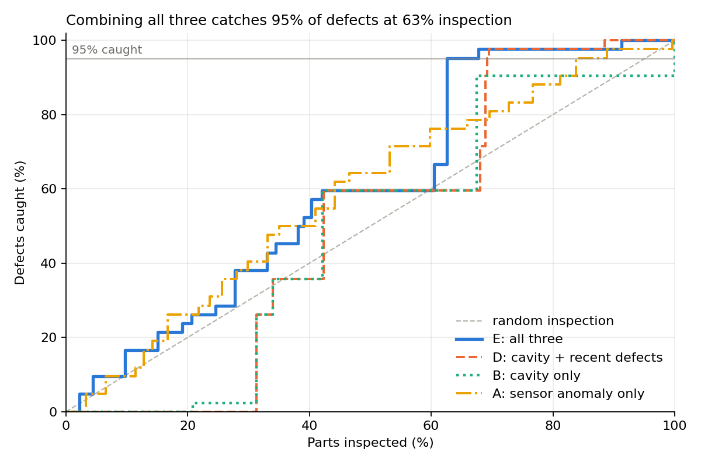

2026 제6회 K-인공지능 제조데이터 분석 경진대회(팀). KAMP 사출성형기 AI 데이터셋(S14 650톤, CN7·RG3 사이드몰딩)으로 품질불량 사전예측과 검사 우선순위 결정 문제에 도전했습니다.
성형 후 사람이 육안으로 전수검사합니다. 불량률 0.96%라 검사 시간 대부분이 양품 확인에 쓰이고, 연속불량은 인지가 늦으며, 금형 자리(LH/RH) 쏠림(불량 39샷 중 38샷이 RH)은 활용되지 않았습니다. 지도학습 분류기는 무작위 수준이었습니다. 그래서 목표를 "불량 판별"이 아니라 "부품별 불량확률 순위로 검사 자원(정밀/표준/샘플링)을 배분"하는 것으로 다시 정의하고, 평가 지표도 정확도 대신 같은 검사량의 무작위 검사 대비 "검사량 대비 불량 포착률"로 잡았습니다.
대회 배포 데이터는 표준화돼 있고 시간·LH/RH 정보가 없었는데, KAMP 원본에서 CN7 10/27(214행)을 제외하고 제품별로 표준화하면 오차 0으로 일치한다는 걸 확인해 시간·자리·불량 유형을 복원했습니다. 외부 데이터 조항에 따라 출처를 명기했습니다.
근거 1 공정 이상 점수는 IsolationForest(나무 300개)를 양품과 라벨 없는 인접일 데이터로 "평소 상태"만 학습시켜 얻습니다. LR 기본/확장, LightGBM, 오토인코더와 비교해 세션 교차검증 PR-AUC 0.101로 가장 높았습니다. 근거 2 캐비티 위험도는 제품×자리별 과거 불량률의 베이지안 평균(α=50)이고, 근거 3 연속불량 상태는 직전 5샷 불량 수와 감쇠 점수(τ=2)입니다. 피처는 제품별 표준화 센서값 23 + 변화량 23 + 흐름 23 + 세션 위치 1 = 70개이며, 날짜는 누수 방지를 위해 입력에서 제외했습니다.
조합별로 불량 95%를 잡는 데 필요한 검사량을 비교하면 캐비티만 100%, 이상점수만 83.8%, 캐비티+연속불량 69.2%, 세 근거 결합 62.6%로 결합해야 내려갑니다. 확률 기준값 대신 같은 제품 최근 200개 대비 순위로 정밀 10% / 표준 50% / 샘플링 40% 등급을 매기고, 검사 결과는 다음 샷의 근거 3으로 되먹입니다.


세션 교차검증(2,393부품/불량 42) → 대회 테스트일 RG3 10/23(500/10) → 날짜순 walk-forward 10월(2,927/25, 생산일마다 그 이전 데이터로만 표준화·IF·캐비티 표·회귀·기준값 전부 재학습, 개선 후보 23개 비교) → 11월 봉인 테스트(1,000/8, 최종안 확정 후 한 번만 평가). 무작위 80:20 분할에서 LightGBM ROC-AUC 0.93이 날짜 분할에서 0.61로 떨어지는 것을 보이고 날짜순 결과만 보고했습니다. "전부 양품" 판정은 정확도 99.1%지만 불량 0개, 최종안은 정확도 40.6%지만 불량 25/25라는 착시도 함께 적었습니다.